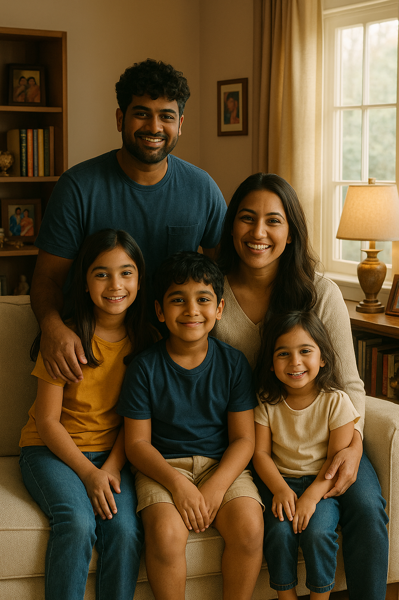

You will survive. Just two more months and you will get that degree you worked so hard for. Those endless hours you put in to your getting your internships – NASA, Accenture, VISA – all is going to pay off at the end. I know you feel dumb and inadequate in the field of software engineering; I know you feel as if you are a fraud with only surface level knowledge. But I am here to tell you that it is okay, you do end up gaining that technical foundation you wanted – desperately needed. You will succeed at Blue Origin. I know right now you fear being stuck in Seattle, but I am here to tell you how working there really opened your life – I mean who doesn’t love rockets! You made amazing friends, reconnected with old friends, and started a family. Yes, at first, you might have compared yourself to your friends and saw that they were making insane salaries right out of college, and you are going to feel inferior because you quote unquote went to a better school than them. But I am here to tell you that everyone has their own journey, and that you too will get the compensation you want. However, I am here to give you some advice: kill that ego of yours. I know internally you feel inadequate, and externally you put a front of cockiness, but you need to realize that some people will take that badly and that will deter you from many opportunities. Be humble, kind, and open to every opportunity. Seattle is a crazy world, and it seems like everyone is doing something cool and you should try to do as much as possible if you do not spread yourself too thin. Also, side note, get onto that LeetCode grind – that is the only way we can get that SWE role. Now, in terms of AI, I am not going to lie to you and act like it is not a widely integrated thing into the infrastructure of organizations, but the more I interact with LLMs I am seeing the vulnerabilities in the code being outputted. I know that ever since we were young, we wanted to get an MBA and follow our father’s footsteps, and to be frank I think consulting might be the move in the long run. The more I see this tech world, the more I think getting into AI consulting might be worth it. But we both know how expensive grad school is, and while we can afford it, I don’t know if it is quite worth it to shell $500k for a degree. Anyhow, this career stuff is boring. You remember how you always wanted that lake front house – Yea we got it in San Diego. It was a struggle though, not going to lie. Life is not easy for us, and we both know how much you have had to go through to get even where you are today. And I think this is why I wanted to write this letter to you. Recently, I have been reflecting on my life – you could say it is a byproduct of a mid-life crisis – and I wanted to let you know we do end up being happy. I think that our life especially in our teen years has been very up and down and you must be wondering if we ever get to be happy – if there is light at the end of our tunnel. I am here to tell you to that everything is going to be okay and just have faith in yourself and God. He has saved you many times before and will continue to do so in your current moment and in the future.
- From your future self
Memories from Our Life
First Day at Blue Origin
My First Launch
Going out with Friends
Exploring Seattle with my Friends
Moving to San Diego -> First House

Family Picture
Playing soccer with the family